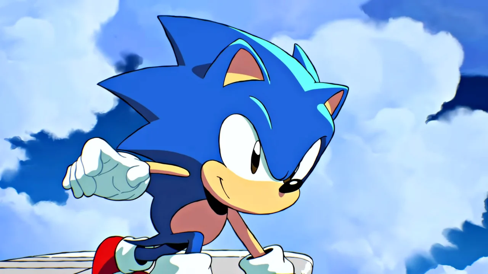
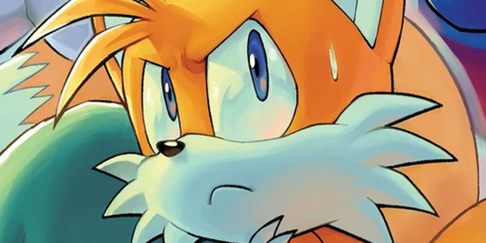
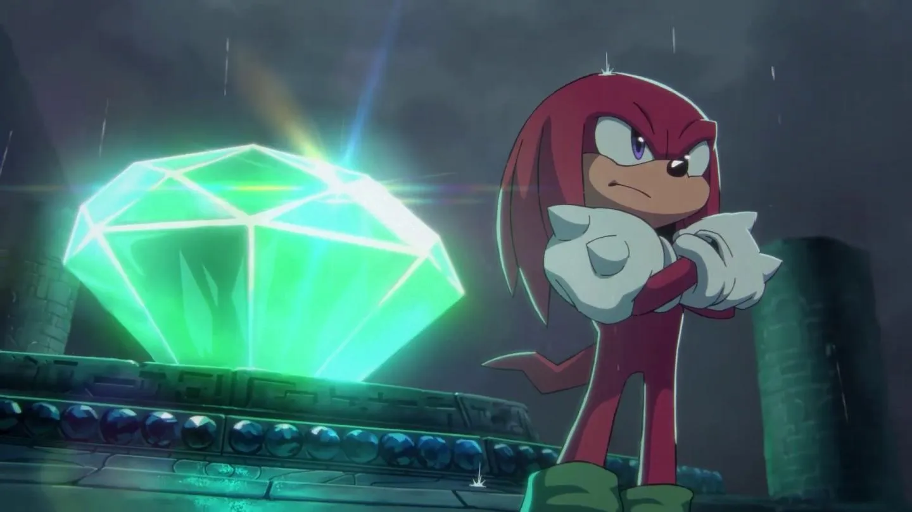

Sonic the Hedgehog
Sonic clásico (クラシック ソニック Kurashikku Sonikku), es un personaje recurrente de la saga Sonic the Hedgehog. Él es un erizo antropomórfico y la contraparte de sonic de otra dimensión del pasado reciente. Básicamente una versión más jóven que el Sonic the Hedgehog actual, Sonic clásico unió fuerzas con su contraparte moderna para detener al Time Eater. Posteriormente iría a la Tierra moderna para ayudar a la Resistencia en la Guerra para Recuperar el Planeta. Finalmente, cuando la Resistencia ganó, Sonic volvió a su mundo.
Sonic clásico mantiene la apariencia de Sonic the Hedgehog vista en los primeros juegos de la saga, osea, antes de Sonic Adventure, siendo de pelaje color azul (un poco más claro que su versión moderna), piel de color melocotón y ojos de color negro. Sus espinas a diferencia de su versión moderna son más cortas y apuntan hacia atrás en vez de hacia abajo, él también es más bajo y gordito. Posee guantes de color blanco y botas de color rojo con una línea de color blanco, hebillas de color dorado y medias de color blanco.
Miles "Tails" Prower
Tails es un pequeño zorro antropomórfico de dos colas, gracias a las cuales, tiene la capacidad de volar (debido al giro rápido de éstas), y de nadar. Gracias a su habilidad de volar y su considerable velocidad, se convirtió en el compañero de aventuras de Sonic the Hedgehog, quien es su mejor amigo. Acompañado de su gran inteligencia y excelentes habilidades de mecánica, Tails funciona como un gran compañero durante las aventuras, siempre ayudando a los demás con una actitud humilde. Su primera aparición fue en Sonic the Hedgehog 2
Tails es un alegre e inteligente zorro, siempre estando dispuesto a acompañar a Sonic y a sus demás amigos en aventuras. Posee una gran inteligencia, genio y habilidades en mecánica. Es capaz de crear sus propios inventos de alta calidad, además de que suele reparar mecanismos complejos para ayudar a sus amigos. Tails tiene una actitud generosa con las personas, siempre ayudando a los demás sin esperar nada a cambio y es humilde con sus logros y hazañas.
Knuckles the Echidna
Es un equidna rojo antropomórfico de 16 años de edad, que es a la vez poderoso físicamente y muy resistente. También es el guardián de la Master Emerald, una poderosa joya antigua que solemnemente deber proteger de cualquiera que busque abusar de su poder. También es el único descendiente superviviente de la raza equidna del Clan Knuckles. Sus rasgos dominantes son su súper fuerza y los dos nudillos en forma de púas en cada uno de sus guantes, de donde se deriva su nombre, los cuales puede usar para cavar y escalar paredes. También puede atrapar el viento debajo de sus rastas para deslizarse por el aire.
es ferozmente leal a su tierra natal y hace todo lo que está en su poder para protegerla. Además, es el guardián legítimo de la Master Emerald por lo que es un rol al que toma mucha responsabilidad. A menudo suele custodiar dicha esmeralda de cualquiera que ose robarla o apropiarse de ella. Es un dedicado guerrero, serio e independiente por naturaleza. Su trabajo de guardián le hace ser una persona solitaria y desconfiada de los demás. Cuando no realiza sus deberes, Knuckles prefiere pasar su tiempo practicando sus habilidades de lucha, cazando tesoros o pasando el rato con sus amigos. Como tal, le importa muy poco lo que piensan los demás, lo que lo hace francamente honesto, directo y un tanto egocentrico. Knuckles suele ser terco y prefiere hacer las cosas a su manera, lo que le hace chocar con los demás. Aunque a menudo se sabe que su temperamento lo mete en problemas, Knuckles también ha aprendido a usarlo a su favor canalizándolo en sus habilidades de lucha.